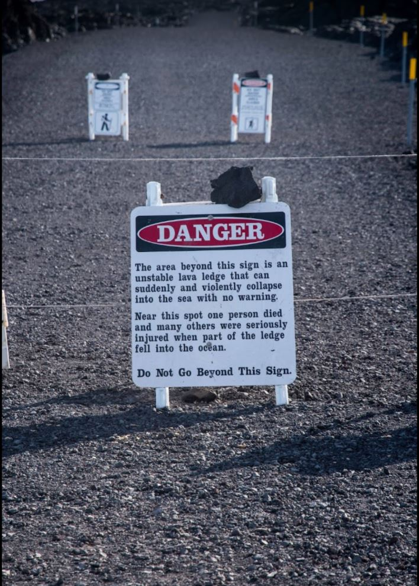
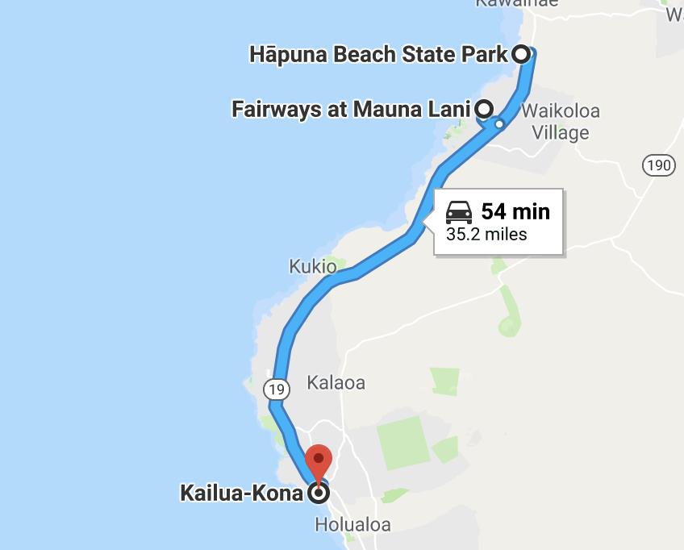
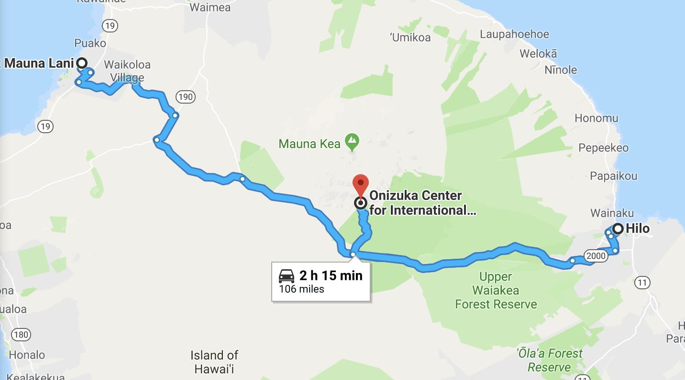
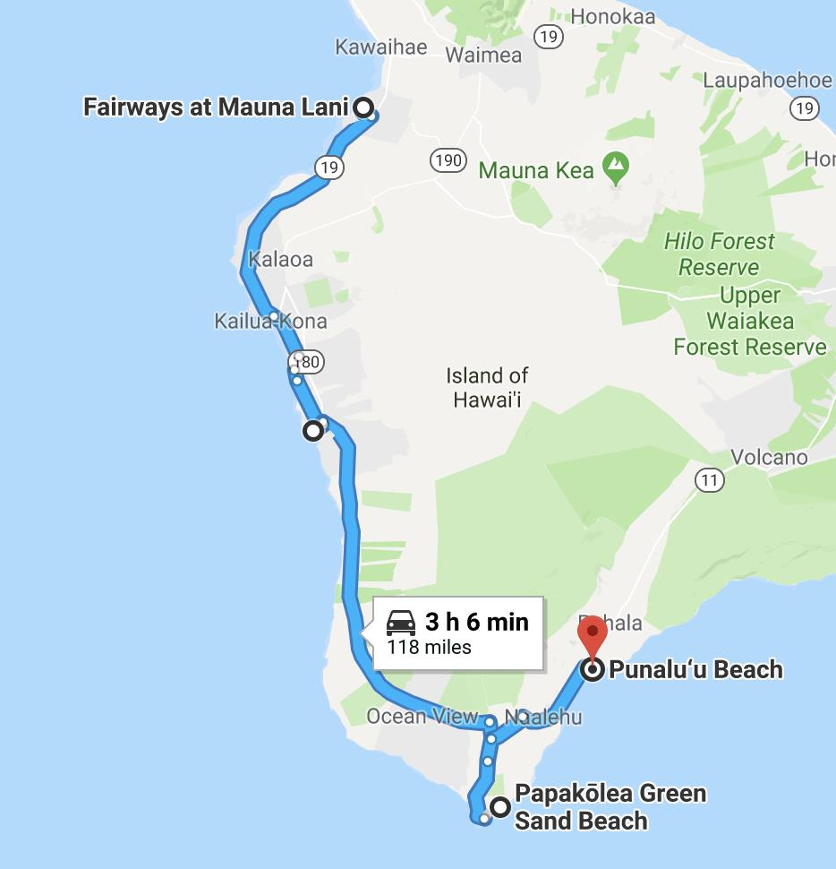
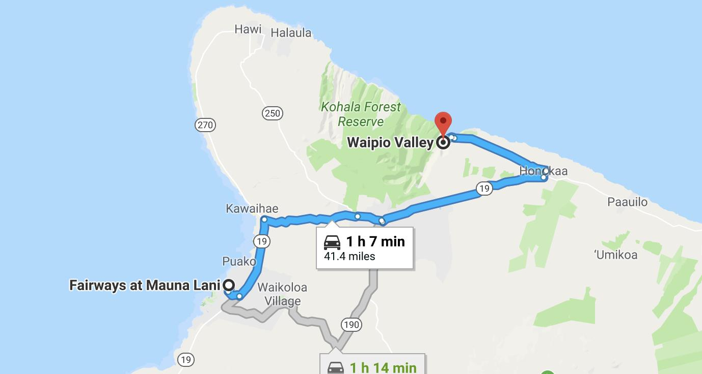
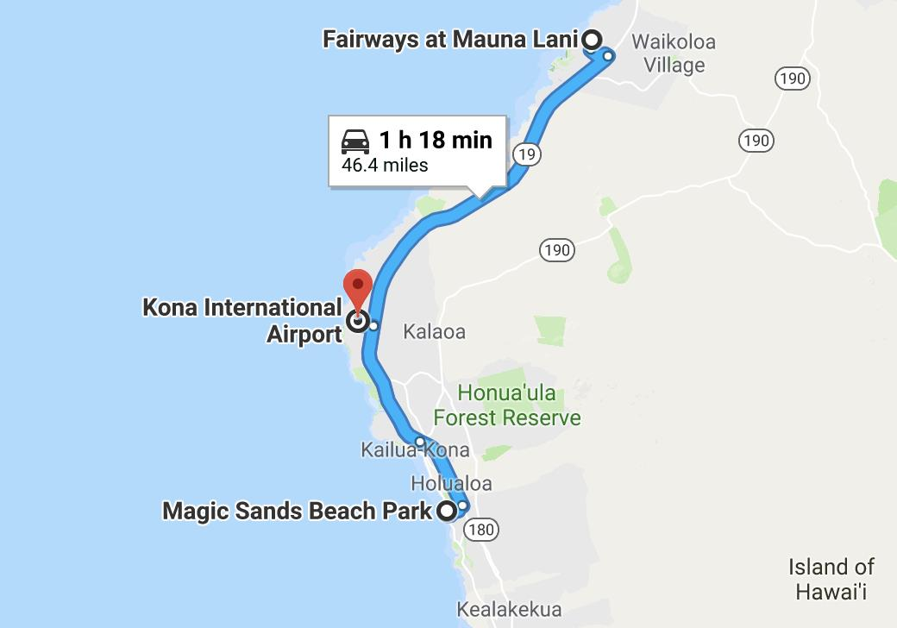

锅爱在夏威夷-2018
Table of Contents
1 准备工作
1.1 建议准备的物品(按用途分类)
1.1.1 衣
- 短衣短裤 或 其他凉爽衣裤
- 泳衣泳裤（最好两套）
- 保暖一点的衣服，比如hard shell冲锋衣（在山上，清晨或晚上用）
- 雨衣，optional
- 帽子
- 拖鞋
- hiking用的鞋子
- 背包和小包
1.1.2 行
- 浮潜设备
- water-resistant sunscreen (SPF 30 或更高)
- 摄像摄影器材，有相机的可以考虑带备用电池
- 移动硬盘
- 充电宝
- insect/mosquito repellent
- hiking 用闪光灯
- 国家公园 Passport （有的话带上盖戳用）
1.2 各小队实际携带的重要物品清单
1.2.1 涵+祖龙小队清单
- 潜水服
- 脸基尼
- 救生衣
- 浮潜管子
- 火锅底料
1.2.2 新泽西小队清单
- 锅爱神
- 现金
1.2.3 西雅图洛杉矶小队清单
- 现金
1.3 地图
大岛的免费地图可以在 这里 下载到
1.4 租车
Mauna Kea Summit自驾的话要求四驱，现在三辆车可能不容易全部改成四驱，且改成四驱的费用大概率翻倍，有些租车公司甚至规定不让租车开上summit。 所以可以考虑我们在大岛单租一天可以上summit的四驱。我做了一点study，网上比较推荐 这一家。
2 吃玩推荐
2.1 吃
2.1.1 笑神推荐（大岛）
- big island grill 的 黑叉烧
- Da poke shack 的 小章鱼
- Ohelo Cafe 的 虾意面
2.2 Hawaii Volcanoes National Park
- Kilauea Volcano
Mauna Loa Volcano
公园目前除了南边的 Kahuku Unit，其他区域处于关闭状态
2.3 其他火山相关活动
因为火山国家公园最著名的环火山区关闭，所以看lava有以下几个选择
2.3.1 直升机 tour
2.3.2 Lava Boat Tours
2.3.3 陆地上的lava viewing
陆地上的话在Pahoa和Kalapana附近应该是有一些地方可以看到lava的。根据下面网友 的叙述，Kalapana lava fields可能现在是部分accessible了。
local 网友 comment 1:
They just reopened Highway 130 south this afternoon, so if you want to hike the Kalapana lava fields to the ocean, you can now do that legally. Just stay out of the restricted areas in and around the Puna district and save yourself some criminal penalties, fines and possible jail time (if you've ever seen the Hilo county jail house on Waianuenue Avenue, you'll be motivated to stay out of trouble at all costs.)
local 网友 comment 2:
New cool flows basically rock, but not the liquid runoff you see on tv. Please don't try to circumvent the checkpoints. You will be fined $5000 and up to 1 year in jail if the judge decides.
It is cheaper to pay the $200 helicopter tour vs a $5k fine. Which will give you a much better view from the air than it would be through the bush.
陆上看lava现下最重要的就是注意安全，有图如下

2.4 Mauna Kea 观星
游客中心大约海拔2800m，从那上到summit开车必须4WD，如果车不行的话可以报tour上去，但是不便宜且有限制，我的考虑是单租一天的4WD我们自己上去。 关于summit 这里 有一些信息。 4WD租车的话请看上面的 租车 小节。
2.5 Waipio Valley
Waipio Valley 里的 Waipio 在土著语中本意 弯曲的河, 此外也被称为国王谷。 开车下到谷底的话必须4WD，所以我们可以考虑hiking下去，时间据说大概两小时。
2.6 Laupahoehoe Beach Park
2.7 Punalu'u Black Sand Beach
看海龟
2.8 Akaka Falls State Park
2.9 South Point Park
2.10 Night Farmer's Market
Residents of the Big Island's lower Puna love Wednesdays. Why, you ask? Because that's when the weekly farmers' market at Uncle Robert’s happens! Uncle Robert Keli'iho'omalu is the legendary and beloved patriarch of the old Kalapana village, and the market takes place at his family compound, located at the south end of the Red Road near the New Kaimu Black Sand Beach. Normally it’s a quiet neighborhood of quaint beach shacks and lush coconut groves, but on Wednesday night it transforms into a huge open-air market bustling with people eager for fresh produce, tasty food, and live music. It’s a lively market full of wonderful sounds, sights, and smells—not to mention lots of friendly aloha spirit—and everyone is welcome.
Hours : The Kalapana farmers' market runs every Wednesday night from 5 PM to 10 PM.
链接戳 这里
3 行程安排
3.1 7.24 Day 1 初来乍到
参观Kailua-kona小镇，Shopping，寻找当地美食，接送小伙伴
酒店附近玩，Mauna Lani的沙滩（可浮潜）
可选活动： Hapuna beach state park （这里是夏威夷最白沙滩） Waikoloa 岩滑 Kalahuipua’a historic trail 古道

3.2 7.25 Day 2 Hilo-Mauna Kea 观星之旅
前往Hilo，在天黑前到达Mauna Kea的Visitor center 
3.3 7.26 Day 3 黑沙滩南部之旅
主要景点：绿沙滩，最南角South Point，黑沙滩
沿途：Captain Cook Monument
可选：浮潜，跳崖

3.4 7.27 Day 4 火山熔岩之旅

3.5 7.28 Day 5 国王谷Wapio Valley 徒步之旅
主要景点：国王谷 scenic hiking trail with ocean view
沿途：Hapuna beach state park 最白沙滩

3.6 7.29 Day 6 Kailua-kona小镇之旅
收拾屋子，Check-out. Kailua-kona小镇参观
可选活动 码头 Magic sands beach park. (近机场) 参观咖啡种植园

4 其他
4.1 事项
- 明信片(当地买)
- 邮票（已备好）
- 娱乐相关：Uno, Avalon
4.2 有用的链接
- 火山国家公园官网 我们到的时候环火山区依然应该关闭，但这个网站的volcano alert信息可以适当关注。
- Volcano Hazard Map 可以了解volcano lava flow 和 fissure 的情况
- 一个大岛当地提供租4WD的网站
- Mauna Kea Summit Tour 我们应该不报tour，但这个网站提供的一些summit的信息可以参考。
- Lava Boat Tour 1
- Lava Boat Tour 2
- Lava Boat Tour 3
- Blue Hawaii Helicopter Tour
- Paradise Helicopter Tour
- Night Farmers' Market